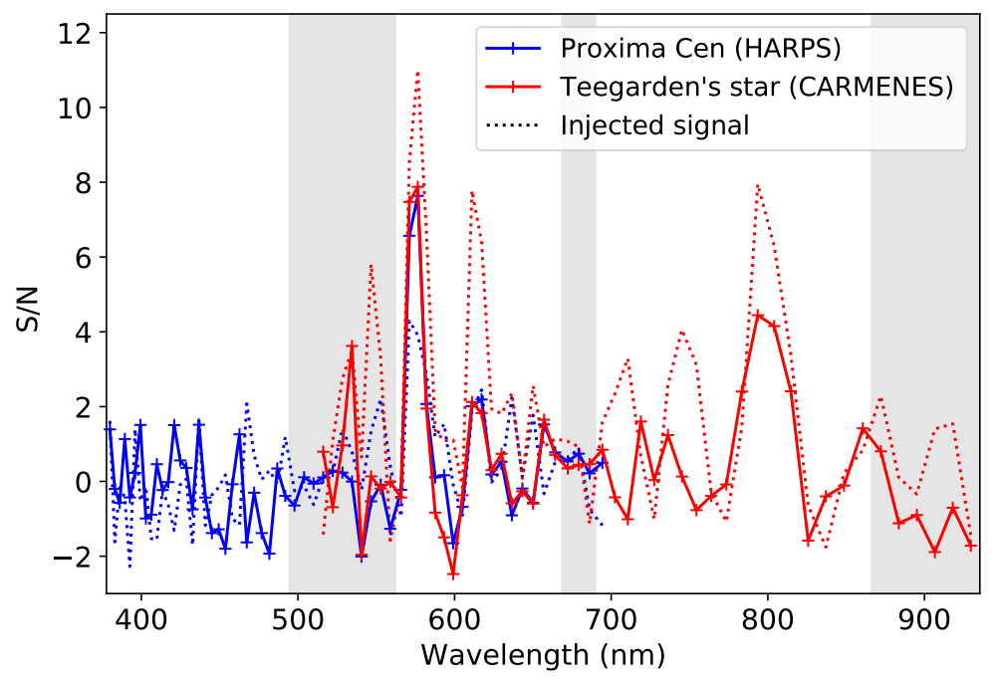

Assessing the Accuracy of the VO Line List
A large number of cross-correlation analyses of high-resolution exoplanet spectra have resulted in non-detections, sometimes in contradiction to low-resolution spectra (e.g. WASP-121b). The high-resolution non-detections have often been attributed to the inaccuracy of the vanadium-oxide (VO) line list.
As a first research project during my master's, under the guidance of Aurora Kesseli and Ignas Snellen, I evaluated the accuracy of the VO line list. Using injection tests in M-dwarf spectra, we quantified the signal-to-noise suppression and determined which wavelengths are most likely to result in a detection.
